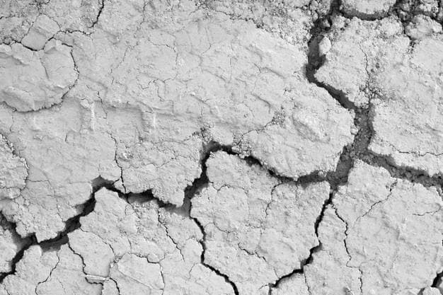
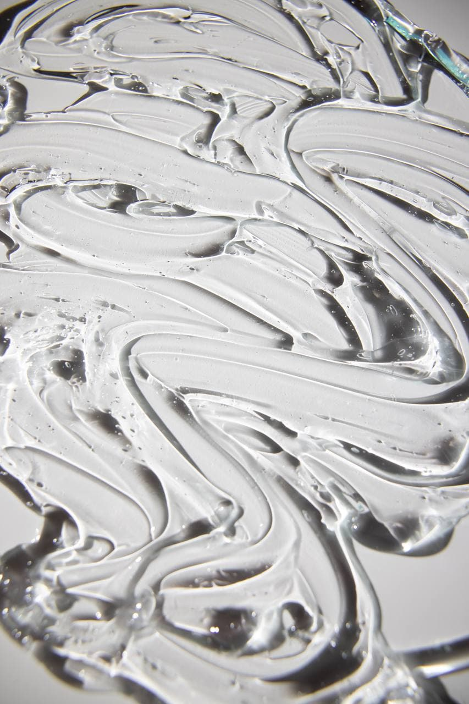

Welcome to Stacy’s Ceramics!
I hope that my ceramic creatures will bring you a breath of fresh air and happiness!
Here you can see my works ,that I have done over the past few months. There are not so many of them, because I have just started development in this area, but I can say ,that I am pretty good at it and I really like it! These clay pots are suitable for transplantation (see an example below, they seem to have "hair"). Great storage space for cutlery, brushes and more, there are absolutely no restrictions so your imagination can play out!
Simone - utensil holder, spoon holder, indie room decor.
Hand sculptured head pot with a unique and ethnic design. They will make your living and business space more interesting and beautiful, and you will be connected to nature again.
Each item is handmade, this is what makes every pot unique and one-of-a-kind. This planter is made from clay and glaze.
They also do not have a drainage hole and are great for indoor use or can be used as a multipurpose bowl!
I'm using white clay, because it is characterized by elasticity and translucency due to the absence of iron oxide in its composition. Fired at a temperature of 1100 ° C. After firing it becomes whitish or ivory.
Covered with two layers of transparent glaze.
